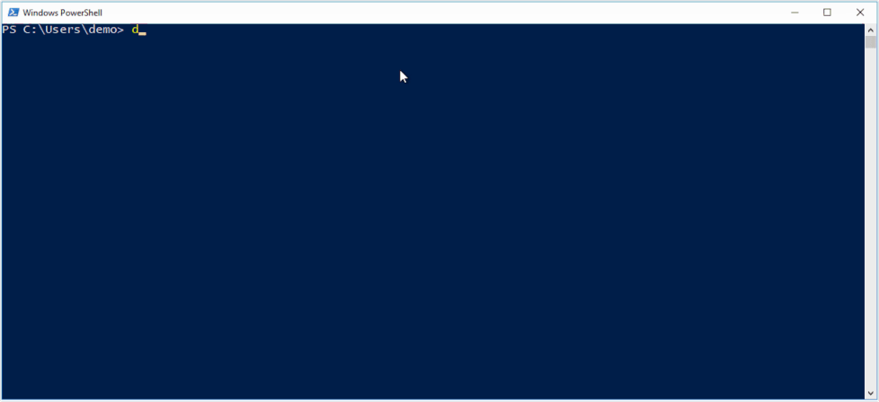

Last week was a busy week as a Docker Captain. Many of us came to Copenhagen to DockerCon EU 2017. You may have heard of the surprising news about Kubernetes coming to Docker. But there were also some other new announcements about Windows Containers.
Docker on Windows Workshop
On Monday I helped Elton Stoneman in his Docker on Windows Workshop. This time it was a full-day workshop and it was fully packed with 50 people.
Elton is always running the workshop at a rapic pace, but don't worry the workshop material is all public available on GitHub. So we went through dockerizing ASP.NET apps, adding Prometheus, Grafana and an ELK stack for monitoring, building a Jenkins CI pipeline and finally running a Docker Swarm. There is lots of things to look up in the material. If you prefer a book, I can recommend his Docker on Windows book which is also fully packed with many tips and tricks.
LCOW - The Inside Story
One of my favorite talks was by John Starks from Microsoft about Linux Container on Windows - The Inside Story. He explained how LinuxKit is used to run a small HyperV VM for the Linux containers to provide the Linux kernel. On his Windows 10 1709 machine he also gave pretty good live demos. The video is online and is worth watching.
In the photo you can see an alpine and nanoserver container running side-by-side. So you will no longer need to switch between Linux and Windows containers, it just works. He also showed that volumes work between Linux and Windows containers. This demo was done with a special Docker engine as not all pull requests haven't been merged. But still challenging for me to try this on a own machine ...
Windows Server 1709
During the DockerCon week Microsoft has announced the availability of Windows Server Version 1709 for download. I first looked at the Azure Portal, but found nothing yet. I also couldn't find the downloads.
So after the LCOW talk I used a Windows 10 VM in Azure and installed the Fall Creators Update to have 1709 on that desktop machine. I found the missing pull request and compiled a Docker engine from source and then I had my LCOW moment:

When you see this the first time working and know what technical details had to be solved make make it look so simple and easy - awesome!
The next day I found the Windows Server 1709 ISO in my MSDN subscription. So I could start working on a Packer template in my packer-windows GitHub repo to automate the creation of such Windows VM's. But DockerCon is to meet people and learn new things: Nicholas Dille went another very interesting way to build a VM with Docker without running Windows Setup.
Smaller Windows images
In the last months we could follow the progress of the Windows Server in several Insider builds. I blogged about the smaller NanoServer Insider images in July going down to 80-90 MByte. Now with the new release of Windows Server 1709 and Windows 10 version 1709 we now can use official images.
- microsoft/windowsservercore:1709
- microsoft/nanoserver:1709
- microsoft/dotnet:2.0.0-*-nanoserver-1709
- microsoft/aspnet:4.7.1-windowsservercore-1709
The biggest discussion is about having no PowerShell in the small nanoserver image. For me it's a nice fit to just COPY deploy microservices into the Windows image.
I haven't seen an official PowerShell base image based on nanoserver, but there is at least the beta version
- microsoft/powershell:6.0.0-beta.9-nanoserver-1709
I also have pushed some images to the Docker Hub to get started with other languages and tools.

If you don't have HyperV installed in Windows Server 1709 (maybe you are running a VM in the Cloud) then you cannot run older Windows Docker image on the new server. All images have to be built based on the new 1709 base images.
Windows 10 users always use HyperV to run Linux or Windows containers, so you don't feel that hard constraint on your developer machine.
It will be interesting to see how the multiple Windows versions evolve and when the next Insider program is giving us early access to the upcoming features.
Captains Hack Day
On our Docker Captains Hack Day Michael Irwin has started a better Swarm Visualizer 2.0. During the day we have added a first CI pipeline and - of course - Windows support. But not only Windows! With some magic multi-stage multi-arch builds we also managed to cross-build the visualizer on an Intel machine and create a Docker image for IBM z390 mainframes. Phil Estes tested the image in the IBM cloud. I'll write a more detailed blog post about how to cross-build Node.js apps with Docker.
That was a fascinating week at DockerCon. Thanks to Jenny, Ashlinn, Victor, Mano ... for making this event so wonderful. I had a lot of hallway tracks to talk with many people about Windows Containers in devolpment and production. Share and learn!
Stefan
@stefscherer